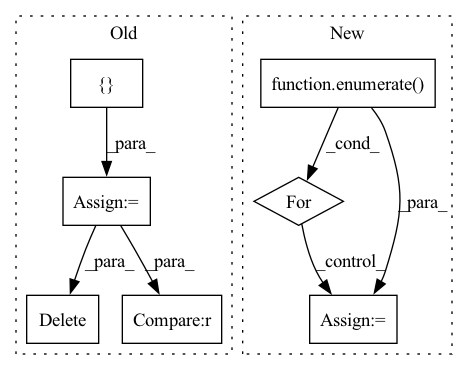

Pattern ID :12849
Before Change
del pos_scores_threshold
// Computing False Acceptance Rate (false alarm)
negative_scores = torch.cat(
len(thresholds) * [ negative_scores.unsqueeze(0)negative_scores.transpose(0, 1) > thresholds
FAR = (neg_scores_threshold.sum(0)).float() / negative_scores.shape[1]
del negative_scores
del neg_scores_threshold
// Finding the threshold for EER
min_index = (FAR - FRR).abs().argmin()After Change
final_FRR = 0
final_FAR = 0
for i, cur_thresh in enumerate( thresholds):
pos_scores_threshold = positive_scores <= cur_thresh
FRR = (pos_scores_threshold.sum(0)).float() / positive_scores.shape[0]
del pos_scores_threshold
neg_scores_threshold = negative_scores > cur_thresh
FAR = (neg_scores_threshold.sum(0)).float() / negative_scores.shape[0]
del neg_scores_threshold
// Finding the threshold for EER
if (FAR - FRR).abs().item() < abs(final_FAR - final_FRR) or i == 0:
min_index = i
final_FRR = FRR.item()
final_FAR = FAR.item()
// It is possible that eer != fpr != fnr. We return (FAR + FRR) / 2 as EER.In pattern: SUPERPATTERN
Frequency: 3
Non-data size: 7
Instances Fragment ID: 43495062
Project Name: speechbrain/speechbrain
Commit Name: 84bca108f8c3739bc2f058bab7e43db32c46e090
Time: 2022-07-01
Author: dominik.wagner@th-nuernberg.de
File Name: speechbrain/utils/metric_stats.py
M Class Name: AnonimousClass
N Class Name: AnonimousClass
M Method Name: EER(2)
N Method Name: EER(2)
M Parent Class:
N Parent Class:
M File Name: speechbrain/utils/metric_stats.py
N File Name: speechbrain/utils/metric_stats.py
M Start Line: 477
M End Line: 505
N Start Line: 477
N End Line: 504
Before Change
del pos_scores_threshold
// Computing False Acceptance Rate (false alarm)
negative_scores = torch.cat(
len(thresholds) * [ negative_scores.unsqueeze(0)negative_scores.transpose(0, 1) > thresholds
FAR = (neg_scores_threshold.sum(0)).float() / negative_scores.shape[1]
del negative_scores
del neg_scores_threshold
// Finding the threshold for EER
min_index = (FAR - FRR).abs().argmin()After Change
final_FRR = 0
final_FAR = 0
for i, cur_thresh in enumerate( thresholds):
pos_scores_threshold = positive_scores <= cur_thresh
FRR = (pos_scores_threshold.sum(0)).float() / positive_scores.shape[0]
del pos_scores_threshold
neg_scores_threshold = negative_scores > cur_thresh
FAR = (neg_scores_threshold.sum(0)).float() / negative_scores.shape[0]
del neg_scores_threshold
// Finding the threshold for EER
if (FAR - FRR).abs().item() < abs(final_FAR - final_FRR) or i == 0:
min_index = i
final_FRR = FRR.item()
final_FAR = FAR.item()
Fragment ID: 43495094
Project Name: speechbrain/speechbrain
Commit Name: f1fd2091d053c0c34e88b134495f9b791037b3dd
Time: 2022-06-23
Author: tplink312@gmail.com
File Name: speechbrain/utils/metric_stats.py
M Class Name: AnonimousClass
N Class Name: AnonimousClass
M Method Name: EER(2)
N Method Name: EER(2)
M Parent Class:
N Parent Class:
M File Name: speechbrain/utils/metric_stats.py
N File Name: speechbrain/utils/metric_stats.py
M Start Line: 477
M End Line: 505
N Start Line: 477
N End Line: 504
Before Change
load_image = LoadImaged(key, *self._args, **self._kwargs)
d = load_image(d)
else:
modalities = []
for modality in d[key]:
d["modality"] = modality
if "modality_meta_dict" in d:
del d["modality_meta_dict"]
load_image = LoadImaged(
"modality", *self._args, **self._kwargs
)
d = load_image(d)
modalities.append(d["modality"])
d[key] = np.stack(modalities)
if d[key].shape[0] == 1 :
d[key] = np.squeeze(d[key], axis=0)
d[f"{key}_meta_dict"] = d["modality_meta_dict"]
del d["modality"], d["modality_meta_dict"]
return d
After Change
d = load_image(d)
else:
modalities = {}
for j, modality in enumerate( d[key]):
modalities[f"modality_{j}"] = modality
d = {**d, **modalities}
load_image = Compose( Fragment ID: 43495070
Project Name: pashtari/factorizer
Commit Name: 51cecfcd602912078b77a9ab4849bd0f9aff7fab
Time: 2022-09-13
Author: pooya.ash@gmail.com
File Name: factorizer/data/transforms.py
M Class Name: ReadImaged
N Class Name: ReadImaged
M Method Name: __call__(2)
N Method Name: __call__(2)
M Parent Class: MapTransform
N Parent Class: MapTransform
M File Name: factorizer/data/transforms.py
N File Name: factorizer/data/transforms.py
M Start Line: 57
M End Line: 80
N Start Line: 61
N End Line: 81